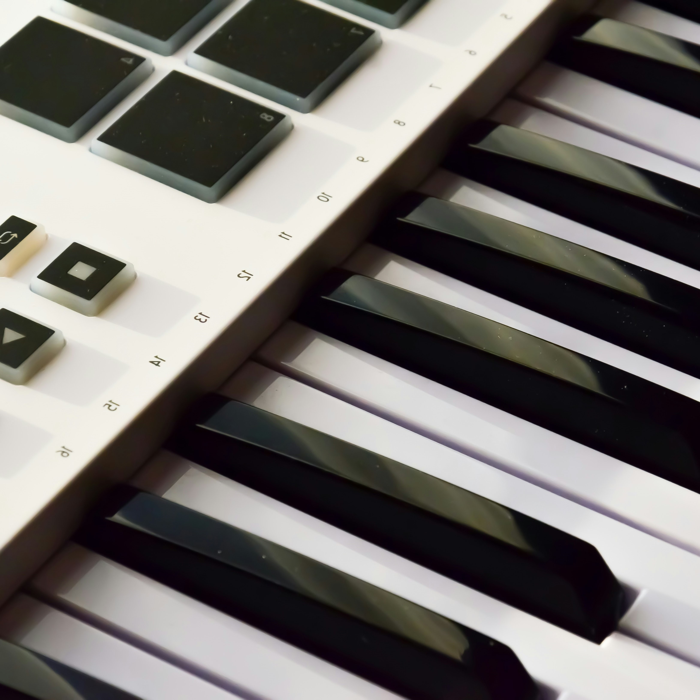
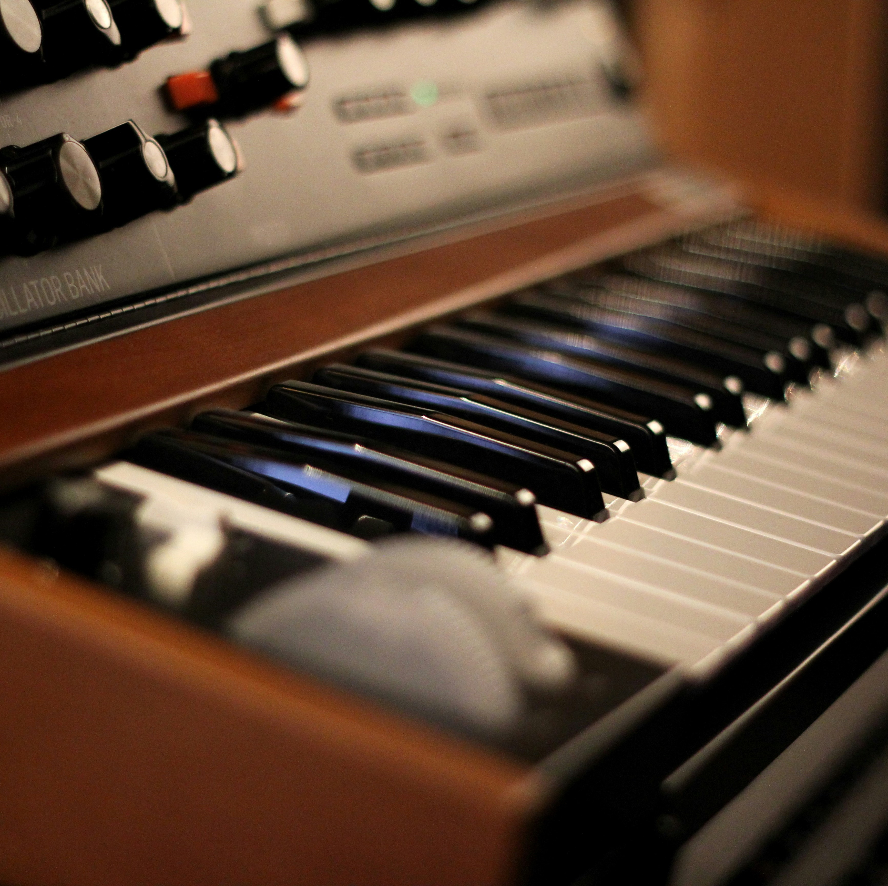

About Us
At WIL-BORD, we have been building high-quality keyboards and synthesizers since 2014. As a company, we strive to meet the needs of even the most demanding musicians. With a decade of experience in the field, our keyboards are beloved by musicians across all musical genres and levels of experience.
Models
The Breeze
Series
The Breeze series is our mainline series that offers a variety of keyboards suitable for both professional and personal use. The versatility of the series has made it popular among professionals and beginners alike.
The Mini-Bord
Series

The Mini-BORD series of compact synthesizers is perfect for traveling musicians due to its portability, making it easy to take with you wherever you go. They are also popular among producers for their user-friendly interface and affordability.
The Namesake
Series

The Namesake series is our deluxe line of synthesizers custom-made to fit your needs, The namesake series features more than 600 presets with meticulously hand-picked samples, and each Namesake Synth is also intricately hand-built ensuring the highest build quality.
our team

William Tracey
CEO/Engineering
Founder

Emilia Pär
Design/QA
Co-founder

Thomas Russell
Sales/Support
Co-founder